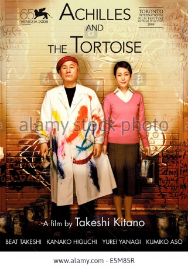

#3737 Achilles to Kame *OmU*
 
 IMDB-Wertung: 7.4 / 10
IMDB-Wertung: 7.4 / 10  Metascore: 0
Metascore: 0 
Machisu is a painter. He never had the success he thinks he is entitled to. Regardless of this, he always remains trying to be successful. His wife Sachiko keeps supporting him, despite all setbacks.
Japanisch mit dt. Untertiteln
Jahr: 2008
Dauer: 119 Minuten
FSK:
Land: Japan Studio: Tokyo Theatres K.K.Tonspuren:
Untertitel: Deutsch,
Auflösung: 1080p (1920x1040) Größe: 7290 MB
Genre: Drama, Komödie
Regisseur:  Takeshi Kitano
Takeshi Kitano
Drehbuch: Mayo Simon
Soundtrack:
Darsteller:
 Takeshi Kitano als Machisu Kuramochi
Takeshi Kitano als Machisu Kuramochi- Mariko Tsutsui als Haru Kuramochi
- Kanako Higuchi als Sachiko
- Kumiko Asô als Sachiko - young
- Aya Enjôji als Tomisuke's wife
- Kuruo Hatoyama als
- Miki Hayashida als Passenger
- Masat�� Ibu als Akio Kikuta
- Beat Kiyoshi als
- Taigi Kobayashi als
- Shôken Kunimoto als
- Yoshiyuki Morishita als Male Prostitute
- Akira Nakao als Risuke Kuramochi
- Takashi Nishina als Dream artist
- Makoto Ohtake als
- Bobby Ologun als Boxer
- Susumu Terajima als Yakuza pimp
- Eri Tokunaga als Mari Kuramochi
- Yûrei Yanagi als Machisu - adolescent
- Reikô Yoshioka als Machisu - young
- Takeshi Ôbayashi als
- Nao Ômori als Picture Dealer
- Ren Ôsugi als Tomisuke Kuramochi
Datei: X:\HD-Eastern-Modern(A-M)\Achilles to Kame (OmU) (2008, FSK, 1920x1040).mkv seit 30.05.2016
Festplatte: HD Eastern+Western
 Es gibt insgesamt 104 Filme in der Gruppe 'HD-Eastern-Modern(A-M)'
Es gibt insgesamt 104 Filme in der Gruppe 'HD-Eastern-Modern(A-M)'